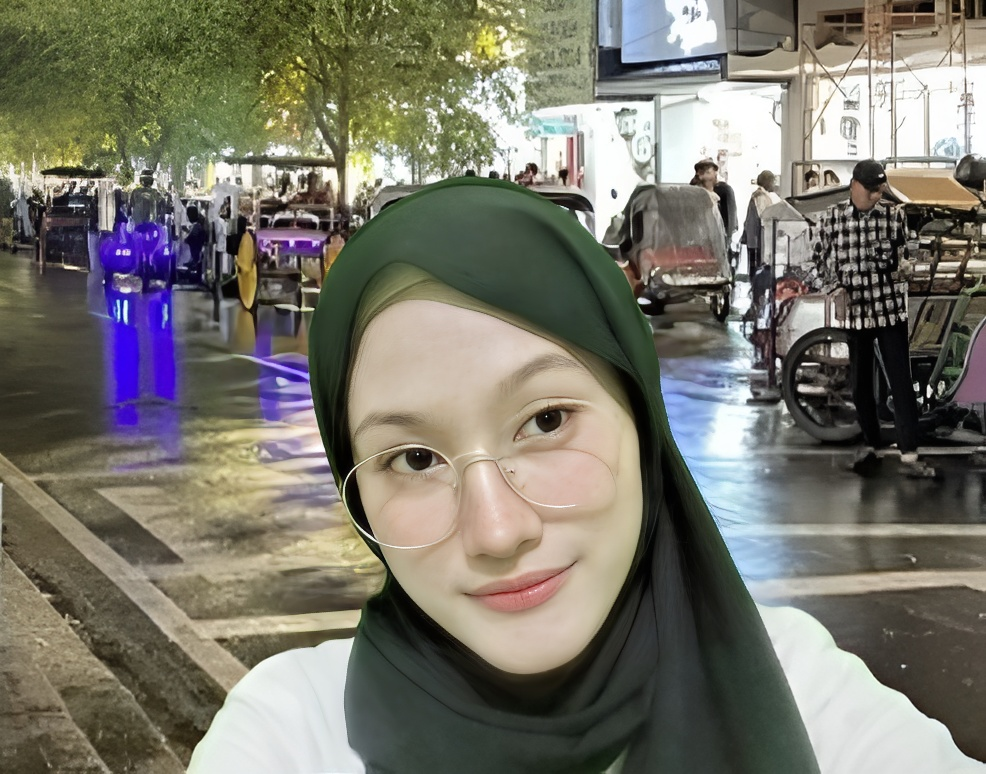

Soft Skill Saya
Good Listener
Paham pentingnya mendengarkan tanpa menghakimi dan memberi ruang bagi orang lain untuk berbicara.
Problem Solving
Terampil mencari solusi untuk setiap masalah dengan pendekatan yang tenang logis, dan efektif.
Kreativitas
Mampu menghasilkan ide-ide unik dan out-of-the-box yang memberikan nilai tambahaan.
Adaptasi
Cepat beradaptasi dengan situasi baru dan flexsibel dalam menghadapi perubahan.
STUDENT
Zaharani Zuardi Putri
Halo, saya Zahra, mahasiswa Informatika dari Universitas Teknologi Yogyakarta, Fakultas Sains dan Teknologi.
Saat ini, saya fokus mengembangkan keahlian di bidang teknologi dan desain. Awalnya, saya bersekolah di SMK
dengan jurusan Desain Komunikasi Visual (DKV), namun saya memutuskan untuk melanjutkan studi di Informatika
karena saya merasa teknologi sangat menarik dan memiliki potensi besar untuk mengubah dunia. Meskipun saya
kini berada di jurusan Informatika, saya tetap mengasah kemampuan desain, khususnya dalam UI/UX,
dan bercita-cita menjadi seorang data scientist atau programmer yang dapat mengembangkan solusi berbasis
teknologi yang dapat berdampak besar.
Saya selalu bersemangat untuk belajar hal baru dan terus berkembang dalam bidang teknologi,
agar bisa menciptakan inovasi yang bermanfaat. Selain itu, saya juga menyukai menggambar,
mengarang atau menulis cerita, dan saya menyukai sate. Saya suka warna pink dan biru langit,
yang mencerminkan sisi kreatif dan penuh warna dalam hidup saya.